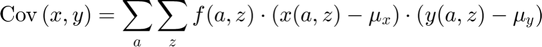
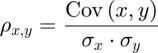

Compute Covariance, Correlation for cov(x,y) given X(a,z), Y(a,z) and f(a,z)
back to Fan's Dynamic Assets Repository Table of Content.
Contents
function [fl_cov_xy, fl_cor_xy] = fft_disc_rand_var_mass2covcor(varargin)
FFT_DISC_RAND_VAR_MASS2COVCOR find cov(x,y) given X(a,z), Y(a,z) and f(a,z)
Having computed elsewhere E(X), E(Y), and SD(X), SD(Y), and given X(a,z) and Y(a,z), which are the optimal choices along the endogenous state space grid a, and the exogenous state space grid z, and given also f(a,z), the probability mass function over (a,z), we compute covariance and correlation between outcomes X and Y.
- Covariance

- Correlation

@param st_var_name string name of the variable (choice/outcome) been analyzed
@param mt_choice_bystates matrix N by M of choices along two dimensions, N could be endogenous states, M could be exogenous shocks, or vice-versa
@param mt_dist_bystates matrix N by M of probability mass on states, N could be endogenous states, M could be exogenous shocks, or vice versa
@return tb_choice_drv_cur_byY table table containing two columns, unique outcomes/choices y from y(a,z) and probability mass associated with each y f(y)
@return ar_choice_prob_byY table array probability mass associated with each y f(y), second column from tb_choice_drv_cur_byY, dimension unknown, determined by y(a,z) function
@return ar_choice_unique_sorted_byY table array unique Ys, dimension unknown, determined by y(a,z) function
@return mt_choice_prob_byYZ matrix f(y,z), meaning for y outcomes along the column dimension.
@return mt_choice_prob_byYA matrix f(y,a), meaning for y outcomes along the row dimension.
@seealso
Default
use binomial as test case, z maps to binomial win prob, remember binom approximates normal.
if (~isempty(varargin)) % if invoked from outside overrid fully [covvar_input_map] = varargin{:}; bl_display_drvm2covcor = false; else clear all; close all; it_states = 6; it_shocks = 5; fl_binom_n = it_states-1; ar_binom_p = (1:(it_shocks))./(it_shocks+2); ar_binom_x = (0:1:(it_states-1)) - 3; % f(z) ar_binom_p_prob = binopdf(0:(it_shocks-1), it_shocks-1, 0.5); % f(a,z), mass for a, z mt_dist_bystates = zeros([it_states, it_shocks]); for it_z=1:it_shocks % f(a|z) f_a_condi_z = binopdf(ar_binom_x - min(ar_binom_x), fl_binom_n, ar_binom_p(it_z)); % f(z) f_z = ar_binom_p_prob(it_z); % f(a,z)=f(a|z)*f(z) mt_dist_bystates(:, it_z) = f_a_condi_z*f_z; end % x(a,z), some non-smooth structure rng(123); mt_choice_x_bystates = ar_binom_x' - 0.01*ar_binom_x'.^2 + ar_binom_p - 0.5*ar_binom_p.^2 + rand([it_states, it_shocks]); mt_choice_x_bystates = round(mt_choice_x_bystates*3); % y(a,z), some non-smooth structure rng(456); mt_choice_y_bystates = 10 -(mt_choice_x_bystates) + 15*(rand([it_states, it_shocks])-0.5); % Obtain mean and sd st_cur_output_key = 'x_outcome'; [ar_choice_prob_byX, ar_choice_unique_sorted_byX, ~, ~] = ... fft_disc_rand_var_mass2outcomes(st_cur_output_key, mt_choice_x_bystates, mt_dist_bystates); [ds_stats_x_map] = fft_disc_rand_var_stats(st_cur_output_key, ar_choice_unique_sorted_byX', ar_choice_prob_byX'); fl_choice_x_mean = ds_stats_x_map('fl_choice_mean'); fl_choice_x_sd = ds_stats_x_map('fl_choice_sd'); st_cur_output_key = 'y_outcome'; [ar_choice_prob_byY, ar_choice_unique_sorted_byY, ~, ~] = ... fft_disc_rand_var_mass2outcomes(st_cur_output_key, mt_choice_y_bystates, mt_dist_bystates); [ds_stats_y_map] = fft_disc_rand_var_stats(st_cur_output_key, ar_choice_unique_sorted_byY', ar_choice_prob_byY'); fl_choice_y_mean = ds_stats_y_map('fl_choice_mean'); fl_choice_y_sd = ds_stats_y_map('fl_choice_sd'); % display bl_display_drvm2covcor = true; % Collect covvar_input_map = containers.Map('KeyType','char', 'ValueType','any'); covvar_input_map('mt_choice_x_bystates') = mt_choice_x_bystates; covvar_input_map('mt_choice_y_bystates') = mt_choice_y_bystates; covvar_input_map('mt_dist_bystates') = mt_dist_bystates; covvar_input_map('fl_choice_x_mean') = fl_choice_x_mean; covvar_input_map('fl_choice_x_sd') = fl_choice_x_sd; covvar_input_map('fl_choice_y_mean') = fl_choice_y_mean; covvar_input_map('fl_choice_y_sd') = fl_choice_y_sd; end
----------------------------------------
xxxxxxxxxxxxxxxxxxxxxxxxxxxxxxxxxxxxxxxx
Summary Statistics for: x_outcome
xxxxxxxxxxxxxxxxxxxxxxxxxxxxxxxxxxxxxxxx
----------------------------------------
fl_choice_mean
-0.1108
fl_choice_sd
4.1239
fl_choice_coefofvar
-37.2149
fl_choice_prob_zero
0.0643
fl_choice_prob_below_zero
0.5487
fl_choice_prob_above_zero
0.3871
fl_choice_prob_max
0.0273
tb_disc_cumu
x_outcomeDiscreteVal x_outcomeDiscreteValProbMass CDF cumsumFrac
____________________ ____________________________ ______ __________
-7 0.051764 5.1764 3.2699
-6 0.050217 10.198 5.9889
-5 0.10978 21.176 10.942
-4 0.0014875 21.324 10.996
-3 0.11706 33.031 14.165
-2 0.0080324 33.834 14.31
-1 0.21033 54.867 16.208
0 0.064259 61.293 16.208
2 0.049682 66.261 15.311
3 0.096388 75.9 12.702
x_outcomeDiscreteVal x_outcomeDiscreteValProbMass CDF cumsumFrac
____________________ ____________________________ ______ __________
-1 0.21033 54.867 16.208
0 0.064259 61.293 16.208
2 0.049682 66.261 15.311
3 0.096388 75.9 12.702
4 0.085679 84.468 9.6092
5 0.065337 91.002 6.6611
6 0.057231 96.725 3.5623
7 0.0054218 97.267 3.2198
8 3.7187e-06 97.267 3.2196
9 0.027329 100 1
tb_prob_drv
percentiles x_outcomeDiscreteValPercentileValues fracOfSumHeldBelowThisPercentile
___________ ____________________________________ ________________________________
0.1 -7 3.2699
1 -7 3.2699
5 -7 3.2699
10 -6 5.9889
15 -5 10.942
20 -5 10.942
25 -3 14.165
35 -1 16.208
50 -1 16.208
65 2 15.311
75 3 12.702
80 4 9.6092
85 5 6.6611
90 5 6.6611
95 6 3.5623
99 9 1
99.9 9 1
----------------------------------------
xxxxxxxxxxxxxxxxxxxxxxxxxxxxxxxxxxxxxxxx
Summary Statistics for: y_outcome
xxxxxxxxxxxxxxxxxxxxxxxxxxxxxxxxxxxxxxxx
----------------------------------------
fl_choice_mean
8.8423
fl_choice_sd
6.5845
fl_choice_coefofvar
0.7447
fl_choice_prob_zero
0
fl_choice_prob_below_zero
0.0273
fl_choice_prob_above_zero
0.9727
fl_choice_prob_max
0.0465
tb_disc_cumu
y_outcomeDiscreteVal y_outcomeDiscreteValProbMass CDF cumsumFrac
____________________ ____________________________ ______ ___________
-6.3772 0.015232 1.5232 -0.010985
-4.4805 0.011621 2.6853 -0.016874
-0.72091 0.00047599 2.7329 -0.016913
0.14102 0.057119 8.4448 -0.016002
0.27238 0.085679 17.013 -0.013362
0.50318 0.023242 19.337 -0.01204
2.7525 0.02975 22.312 -0.0027791
3.5617 3.7187e-06 22.312 -0.0027776
4.0352 0.0059499 22.907 -6.2407e-05
5.1855 0.0054218 23.449 0.0031172
y_outcomeDiscreteVal y_outcomeDiscreteValProbMass CDF cumsumFrac
____________________ ____________________________ ______ __________
13.231 0.028917 65.473 0.36675
13.357 0.018593 67.332 0.39484
13.799 0.12852 80.184 0.59539
13.901 0.000119 80.196 0.59558
15.71 0.024097 82.605 0.63839
16.255 0.0080324 83.409 0.65316
16.887 0.092967 92.705 0.8307
18.136 0.022848 94.99 0.87756
19.35 0.0036146 95.352 0.88547
21.786 0.046484 100 1
tb_prob_drv
percentiles y_outcomeDiscreteValPercentileValues fracOfSumHeldBelowThisPercentile
___________ ____________________________________ ________________________________
0.1 -6.3772 -0.010985
1 -6.3772 -0.010985
5 0.14102 -0.016002
10 0.27238 -0.013362
15 0.27238 -0.013362
20 2.7525 -0.0027791
25 5.2138 0.041007
35 6.2166 0.1181
50 6.5321 0.1893
65 13.231 0.36675
75 13.799 0.59539
80 13.799 0.59539
85 16.887 0.8307
90 16.887 0.8307
95 19.35 0.88547
99 21.786 1
99.9 21.786 1
Parse Parameters
% probability over a and z params_group = values(covvar_input_map, {'mt_dist_bystates'}); [mt_dist_bystates] = params_group{:}; % x and y outcomes params_group = values(covvar_input_map, {'mt_choice_x_bystates', 'mt_choice_y_bystates'}); [mt_choice_x_bystates, mt_choice_y_bystates] = params_group{:}; % x and y stats params_group = values(covvar_input_map, {'fl_choice_x_mean', 'fl_choice_x_sd', ... 'fl_choice_y_mean', 'fl_choice_y_sd'}); [fl_choice_x_mean, fl_choice_x_sd, fl_choice_y_mean, fl_choice_y_sd] = params_group{:};
1. Compute Covariance
mt_x_devi_from_mean = (mt_choice_x_bystates - fl_choice_x_mean);
mt_y_devi_from_mean = (mt_choice_y_bystates - fl_choice_y_mean);
mt_x_y_multiply = (mt_x_devi_from_mean).*(mt_y_devi_from_mean);
mt_cov_component_weighted = mt_dist_bystates.*(mt_x_y_multiply);
fl_cov_xy = sum(mt_cov_component_weighted, 'all');
2. Compute Correlation
fl_cor_xy = fl_cov_xy/(fl_choice_x_sd*fl_choice_y_sd);
Display
if (bl_display_drvm2covcor) fft_container_map_display(covvar_input_map, 25, 15); covvar_output_map = containers.Map('KeyType','char', 'ValueType','any'); covvar_output_map('mt_x_devi_from_mean') = mt_x_devi_from_mean; covvar_output_map('mt_y_devi_from_mean') = mt_y_devi_from_mean; covvar_output_map('mt_x_y_multiply') = mt_x_y_multiply; covvar_output_map('mt_cov_component_weighted') = mt_cov_component_weighted; fft_container_map_display(covvar_output_map, 25, 15); disp('fl_cov'); disp(fl_cov_xy); disp('fl_cor'); disp(fl_cor_xy); end
----------------------------------------
----------------------------------------
xxxxxxxxxxxxxxxxxxxxxxxxxxxxxxxxxxxxxxxx
xxxxxxxxxxxxxxxxxxxxxxxxxxxxxxxxxxxxxxxx
Begin: Show all key and value pairs from container
CONTAINER NAME: COVVAR_INPUT_MAP
----------------------------------------
Map with properties:
Count: 7
KeyType: char
ValueType: any
xxxxxxxxxxxxxxxxxxxxxxxxxxxxxxxxxxxxxxxx
xxxxxxxxxxxxxxxxxxxxxxxxxxxxxxxxxxxxxxxx
----------------------------------------
----------------------------------------
pos = 1 ; key = fl_choice_x_mean ; val = -0.11081
pos = 2 ; key = fl_choice_x_sd ; val = 4.1239
pos = 3 ; key = fl_choice_y_mean ; val = 8.8423
pos = 4 ; key = fl_choice_y_sd ; val = 6.5845
pos = 5 ; key = mt_choice_x_bystates ;rown= 6 ,coln= 5
mt_choice_x_bystates :mu= 0.83333 ,sd= 5.3051 ,min= -7 ,max= 9
zi_1_c1 zi_2_c2 zi_3_c3 zi_4_c4 zi_5_c5
_______ _______ _______ _______ _______
zi_1_r1 -7 -6 -7 -6 -6
zi_2_r2 -5 -3 -5 -3 -4
zi_3_r3 -2 -1 -1 0 -1
zi_4_r4 2 2 3 4 2
zi_5_r5 6 5 5 6 5
zi_6_r6 8 9 7 9 9
pos = 6 ; key = mt_choice_y_bystates ;rown= 6 ,coln= 5
mt_choice_y_bystates :mu= 8.3259 ,sd= 7.1913 ,min= -6.3772 ,max= 21.7855
zi_1_c1 zi_2_c2 zi_3_c3 zi_4_c4 zi_5_c5
_______ ________ _______ _______ _______
zi_1_r1 13.231 21.786 18.136 19.35 13.901
zi_2_r2 9.946 16.887 9.6914 15.71 8.6906
zi_3_r3 16.255 6.2166 13.799 5.2138 11.641
zi_4_r4 12.628 2.7525 6.5321 0.27238 13.357
zi_5_r5 5.8844 4.0352 6.05 0.14102 0.50318
zi_6_r6 3.5617 -0.72091 5.1855 -6.3772 -4.4805
pos = 7 ; key = mt_dist_bystates ;rown= 6 ,coln= 5
mt_dist_bystates :mu= 0.033333 ,sd= 0.035743 ,min= 3.7187e-06 ,max= 0.12852
zi_1_c1 zi_2_c2 zi_3_c3 zi_4_c4 zi_5_c5
__________ __________ _________ _________ _________
zi_1_r1 0.028917 0.046484 0.022848 0.0036146 0.000119
zi_2_r2 0.024097 0.092967 0.085679 0.024097 0.0014875
zi_3_r3 0.0080324 0.074374 0.12852 0.064259 0.0074374
zi_4_r4 0.0013387 0.02975 0.096388 0.085679 0.018593
zi_5_r5 0.00011156 0.0059499 0.036146 0.057119 0.023242
zi_6_r6 3.7187e-06 0.00047599 0.0054218 0.015232 0.011621
----------------------------------------
xxxxxxxxxxxxxxxxxxxxxxxxxxxxxxxxxxxxxxxx
Matrix in Container and Sizes and Basic Statistics
xxxxxxxxxxxxxxxxxxxxxxxxxxxxxxxxxxxxxxxx
i idx rowN colN mean std min max
_ ___ ____ ____ ________ ________ __________ _______
mt_choice_x_bystates 1 5 6 5 0.83333 5.3051 -7 9
mt_choice_y_bystates 2 6 6 5 8.3259 7.1913 -6.3772 21.786
mt_dist_bystates 3 7 6 5 0.033333 0.035743 3.7187e-06 0.12852
----------------------------------------
xxxxxxxxxxxxxxxxxxxxxxxxxxxxxxxxxxxxxxxx
Scalars in Container and Sizes and Basic Statistics
xxxxxxxxxxxxxxxxxxxxxxxxxxxxxxxxxxxxxxxx
i idx value
_ ___ ________
fl_choice_x_mean 1 1 -0.11081
fl_choice_x_sd 2 2 4.1239
fl_choice_y_mean 3 3 8.8423
fl_choice_y_sd 4 4 6.5845
----------------------------------------
----------------------------------------
xxxxxxxxxxxxxxxxxxxxxxxxxxxxxxxxxxxxxxxx
xxxxxxxxxxxxxxxxxxxxxxxxxxxxxxxxxxxxxxxx
Begin: Show all key and value pairs from container
CONTAINER NAME: COVVAR_OUTPUT_MAP
----------------------------------------
Map with properties:
Count: 4
KeyType: char
ValueType: any
xxxxxxxxxxxxxxxxxxxxxxxxxxxxxxxxxxxxxxxx
xxxxxxxxxxxxxxxxxxxxxxxxxxxxxxxxxxxxxxxx
----------------------------------------
----------------------------------------
pos = 1 ; key = mt_cov_component_weighted ;rown= 6 ,coln= 5
mt_cov_component_weighted :mu= -0.73612 ,sd= 1.0404 ,min= -3.5432 ,max= 0.17717
zi_1_c1 zi_2_c2 zi_3_c3 zi_4_c4 zi_5_c5
___________ _________ ________ _________ __________
zi_1_r1 -0.87434 -3.5432 -1.4628 -0.22368 -0.0035451
zi_2_r2 -0.13003 -2.1607 -0.35565 -0.47814 0.00087767
zi_3_r3 -0.11248 0.17365 -0.56642 -0.025838 -0.018507
zi_4_r4 0.010697 -0.38241 -0.69273 -3.0184 0.17717
zi_5_r5 -0.0020165 -0.14618 -0.51584 -3.0371 -0.99056
zi_6_r6 -0.00015927 -0.041473 -0.14098 -2.1121 -1.4106
pos = 2 ; key = mt_x_devi_from_mean ;rown= 6 ,coln= 5
mt_x_devi_from_mean :mu= 0.94415 ,sd= 5.3051 ,min= -6.8892 ,max= 9.1108
zi_1_c1 zi_2_c2 zi_3_c3 zi_4_c4 zi_5_c5
_______ ________ ________ _______ ________
zi_1_r1 -6.8892 -5.8892 -6.8892 -5.8892 -5.8892
zi_2_r2 -4.8892 -2.8892 -4.8892 -2.8892 -3.8892
zi_3_r3 -1.8892 -0.88919 -0.88919 0.11081 -0.88919
zi_4_r4 2.1108 2.1108 3.1108 4.1108 2.1108
zi_5_r5 6.1108 5.1108 5.1108 6.1108 5.1108
zi_6_r6 8.1108 9.1108 7.1108 9.1108 9.1108
pos = 3 ; key = mt_x_y_multiply ;rown= 6 ,coln= 5
mt_x_y_multiply :mu= -31.321 ,sd= 36.5643 ,min= -138.6628 ,max= 9.5287
zi_1_c1 zi_2_c2 zi_3_c3 zi_4_c4 zi_5_c5
_______ _______ _______ ________ _______
zi_1_r1 -30.237 -76.225 -64.023 -61.882 -29.792
zi_2_r2 -5.396 -23.242 -4.151 -19.842 0.59004
zi_3_r3 -14.003 2.3348 -4.4073 -0.40209 -2.4884
zi_4_r4 7.9905 -12.854 -7.1868 -35.23 9.5287
zi_5_r5 -18.075 -24.568 -14.271 -53.172 -42.62
zi_6_r6 -42.83 -87.129 -26.003 -138.66 -121.38
pos = 4 ; key = mt_y_devi_from_mean ;rown= 6 ,coln= 5
mt_y_devi_from_mean :mu= -0.51644 ,sd= 7.1913 ,min= -15.2196 ,max= 12.9432
zi_1_c1 zi_2_c2 zi_3_c3 zi_4_c4 zi_5_c5
_______ _______ _______ _______ ________
zi_1_r1 4.389 12.943 9.2933 10.508 5.0587
zi_2_r2 1.1037 8.0444 0.84902 6.8677 -0.15171
zi_3_r3 7.4123 -2.6258 4.9566 -3.6286 2.7985
zi_4_r4 3.7855 -6.0898 -2.3103 -8.57 4.5142
zi_5_r5 -2.9579 -4.8071 -2.7924 -8.7013 -8.3392
zi_6_r6 -5.2806 -9.5633 -3.6568 -15.22 -13.323
----------------------------------------
xxxxxxxxxxxxxxxxxxxxxxxxxxxxxxxxxxxxxxxx
Matrix in Container and Sizes and Basic Statistics
xxxxxxxxxxxxxxxxxxxxxxxxxxxxxxxxxxxxxxxx
i idx rowN colN mean std min max
_ ___ ____ ____ ________ ______ _______ _______
mt_cov_component_weighted 1 1 6 5 -0.73612 1.0404 -3.5432 0.17717
mt_x_devi_from_mean 2 2 6 5 0.94415 5.3051 -6.8892 9.1108
mt_x_y_multiply 3 3 6 5 -31.321 36.564 -138.66 9.5287
mt_y_devi_from_mean 4 4 6 5 -0.51644 7.1913 -15.22 12.943
fl_cov
-22.0835
fl_cor
-0.8133
end